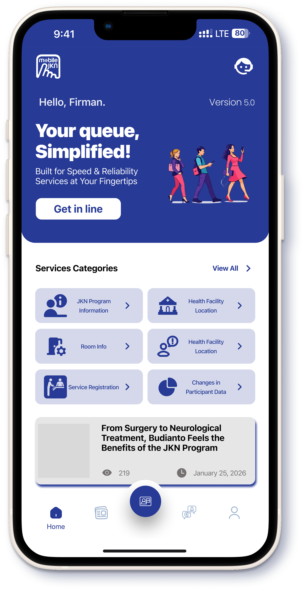
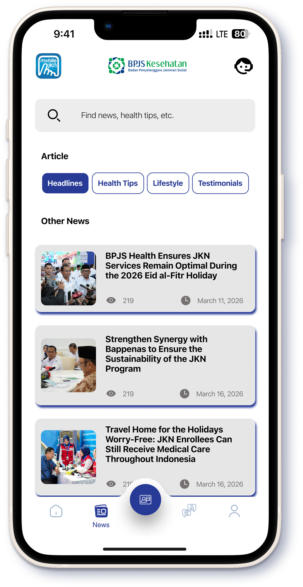
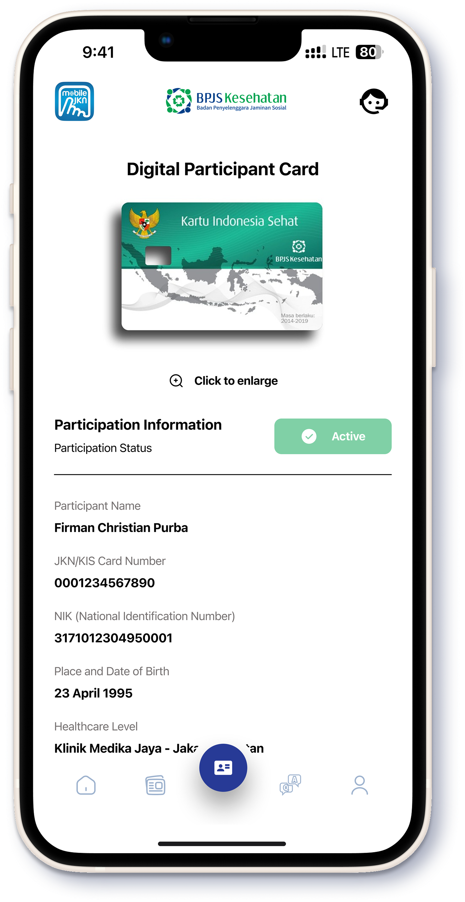
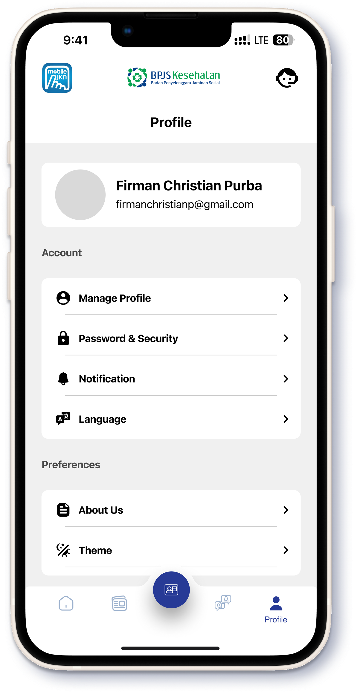

Main Dashboard
Restrukturisasi tata letak beranda untuk memprioritaskan akses cepat ke fitur layanan kesehatan utama.
Transformasi aplikasi layanan kesehatan publik menjadi platform yang lebih inklusif, responsif, dan mudah digunakan bagi seluruh kalangan masyarakat Indonesia.
UI/UX Designer
Maret 2026 (4 Minggu)
High-Fidelity Prototype, Design System
Figma, FigJam

Mobile JKN adalah infrastruktur digital penting bagi sistem kesehatan nasional. Namun, berdasarkan observasi pengguna, ditemukan hambatan kognitif yang signifikan terutama pada navigasi menu yang terlalu padat dan bahasa visual yang kurang konsisten.

Restrukturisasi tata letak beranda untuk memprioritaskan akses cepat ke fitur layanan kesehatan utama.

Penyajian konten berita dan informasi kesehatan terbaru dengan navigasi kategori yang lebih rapi.

Visualisasi kartu peserta digital dengan informasi kepesertaan yang lebih jelas dan mudah dibaca.

Optimasi halaman profil untuk manajemen data pribadi dan riwayat kepesertaan yang lebih intuitif.

Alur autentikasi pengguna dengan desain form yang bersih dan meminimalisir kesalahan input.

Proses pendaftaran akun baru yang disederhanakan untuk meningkatkan tingkat konversi pengguna.

Pusat edukasi program JKN yang informatif mengenai regulasi dan manfaat bagi peserta.

Detail transparansi mengenai hak hukum peserta dalam mendapatkan pelayanan kesehatan.

Informasi mendalam mengenai kewajiban administratif peserta dalam program JKN-KIS.

Ringkasan kepatuhan dan prosedur standar operasional bagi peserta JKN.

Sistem rincian iuran kepesertaan yang transparan untuk memudahkan pelacakan pembayaran.

Panduan penggunaan aplikasi dan tata cara akses layanan kesehatan secara berurutan.

Fitur pencarian fasilitas kesehatan terdekat yang terintegrasi dengan data lokasi real-time.

Informasi persyaratan dan alur pendaftaran peserta baru melalui jalur mandiri atau instansi.

Penjelasan mengenai konsekuensi administratif dan sanksi terkait tunggakan iuran.

Layout halaman artikel berita yang mengedepankan kenyamanan membaca dan hierarki tipografi.

Antarmuka permintaan akses kamera untuk fitur verifikasi wajah dan scan QR Code.

Layar konfirmasi akses lokasi untuk mempermudah pencarian rumah sakit dan klinik terdekat.

English version for data security protocols and biometric access authorization.

Penjelasan keamanan data dan otorisasi akses biometrik dalam Bahasa Indonesia.

Layar permintaan notifikasi untuk pengingat iuran dan informasi layanan medis real-time.

Visual onboarding awal yang memperkenalkan identitas brand Mobile JKN yang modern.

Onboarding yang menonjolkan fitur kemudahan akses layanan tanpa harus mengantre fisik.

Penutup alur onboarding yang mengajak pengguna untuk segera memulai transformasi digital kesehatan.

Visual loading saat aplikasi sedang memuat konten penting.

Visual loading saat aplikasi sedang memuat konten penting.

Visual loading saat aplikasi sedang memuat konten penting.
Lihat bagaimana solusi desain ini bekerja secara nyata. Klik tombol di bawah untuk membuka High-Fidelity Prototype langsung di Figma.
open_in_new Buka Prototipe Figma